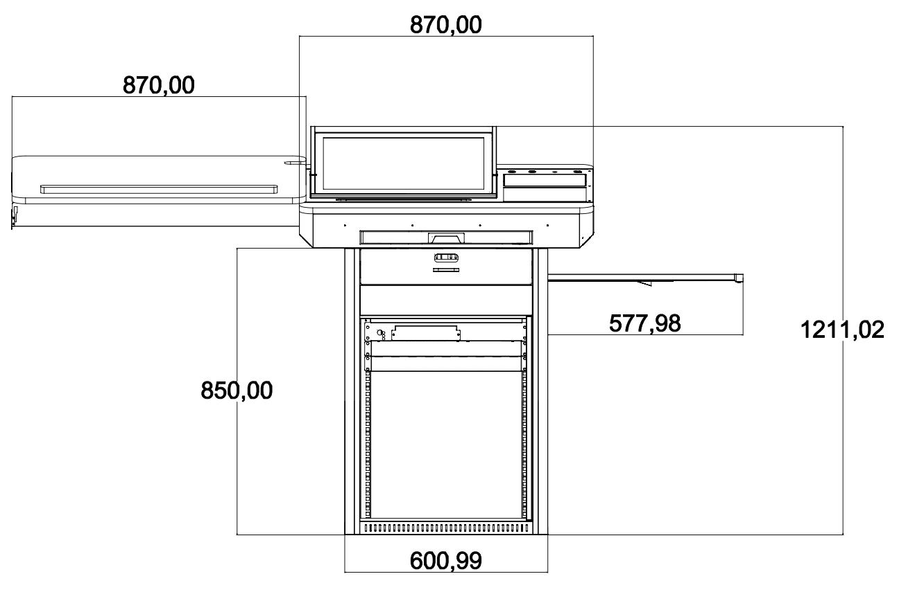
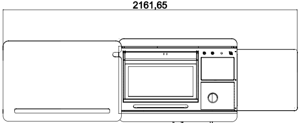

Q-NEX Networked Digital Podium
NDP100
—— Datasheet ——

Product List
The Q-NEX Networked Digital Podium (NDP100) comes with a carefully selected set of components to support versatile classroom and presentation needs.
| Product | Model | Components |
|---|---|---|
| Podium | - | Podium Body * 1 |
| Interactive Pen Display | - | Interactive Pen Display PD150 * 1 |
| Networked Media Processor | - | NMP211 * 1 Touch Panel * 1 Wireless Microphone * 2 |
| Built-in PC | - | Built-in PC * 1 |
| Gooseneck Microphone | - | Gooseneck Microphone * 1 |
| Document Camera (Optional) | E4521 | Document Camera E4521 * 1 (Optional) |
| Full Gigabit Switch | - | Full Gigabit Switch * 1 |
| Router (Optional) | - | Router * 1 (Optional) |
| Lite Media Server (Optional) | - | Lite Media Server * 1 (Optional) |
Podium
Dimension


| No | Name | Description |
|---|---|---|
| 1 | Dimensions (mm) | 870(L) x 609(W) x 1212(H) (closed) 2162(L) x 609(W) x 1212(H) (fully extended) |
| 2 | Weight (kg) | Net Weight: 90 kg Gross Weight: 131 kg |
| 3 | Materials | Reinforced steel plate structure with powder-coated anti-rust paint on the metal surface |
Podium Body

| No | Name | Description |
|---|---|---|
| 1 | Tabletop | Stable surface for teaching activities. |
| 2 | Wireless Microphones | Two high-quality wireless microphones for flexible voice capture during lectures or presentations. Note: Wireless receiver built into NMP for easy pairing. Note: Wireless receiver built into NMP for easy pairing. |
| 3 | Sliding Cover Panel | Protective storage cover, made of eco-friendly material with improved durability. Supports up to 30kg weight. Dimensions: 870(L) x 600(W) x 18(H) mm |
| 4 | Wireless Keyboard and Mouse Combo | Providing control for the built-in PC during lectures and presentations. |
| 5 | Keyboard Tray | Space-efficient tray designed for the wireless keyboard and mouse, ensuring convenient access during use. Dimensions: 507(L) x 180(W) mm |
| 6 | Front Drawer | Secure storage compartment with a combination lock and key, offering extra safety for sensitive devices or materials. Dimensions: 480(L) x 220(W) x 100(H) mm |
| 7 | Rack/Shelf | Spacious storage area for the NMP, built-in PC, and other necessary equipment. Dimensions: 500(L) x 490(W) x 590(H) mm |
| 8 | Foldable Stand | Versatile platform designed for supporting teaching equipment, such as document cameras or additional displays, with an ergonomic folding design for easy storage. Dimensions: 575(L) x 545(W) mm, Weight Capacity: 15kg |
Tabletop

| No | Name | Description |
|---|---|---|
| 1 | Interactive Pen Display | Central touchscreen supporting both finger touch and electromagnetic pen input. Positioned for interaction during lectures. |
| 2 | Groove | Holder for the Interactive Pen Display's active capacitive pen Dimensions: 390(L) mm |
| 3 | Secure Drawer with Combination Lock and Key | Storage drawer equipped with both combination lock and key for secure storage of important items. |
| 4 | Wireless Charging | Integrated wireless charging pad for smartphones, with a 15W output. |
| 5 | Interface | Input/output connections for device integration such as USB drives, laptops, or other peripherals. |
| 6 | Cabinet Antenna (5-in-1) | Antenna unit for Wi-Fi and UHF communications. Includes 2 antennas for built-in PC Wi-Fi, 2 antennas for NMP Wi-Fi, and 1 UHF antenna for wireless microphone. |
| 7 | Touch Panel | Central control interface for managing classroom devices and settings. |
| 8 | Touch Panel Button | An extension of the Touch Panel's power button on the tabletop. A short press puts the screen into sleep mode or wakes it, while a long press (over 3 seconds) powers the device on or off. |
| 9 | Up/Down Buttons | Motorized control for adjusting display height, with limit switch functionality. Red and blue indicator lights show the status: red means the sliding cover is not fully latched and the buttons won’t respond, while blue allows normal operation. |
| 10 | Gooseneck Microphone | High-quality microphone for capturing clear audio during lectures. |
Interactive Pen Display

Screen
| No. | Item | Specification |
|---|---|---|
| 1 | Panel Type | TFT-LCD |
| 2 | Size | 21.5 inch (16:9) |
| 3 | Resolution | 250 cd/m² |
| 4 | Contrast Ratio | 1000:1 |
| 5 | Surface | 6H tempered explosion-proof glass |
| 6 | View Angle | 178° (H), 178° (V) |
Touch
| No. | Item | Specification |
|---|---|---|
| 1 | Technology | Capacitive |
| 2 | Pen | Active pen |
| 3 | Scanning Resolution | 4096×4096 |
| 4 | Voltage | DC+5V ±5% |
| 5 | Touch Points | 10 points touch |
| 6 | Response Time | <15 ms |
Ports
| No. | Item | Specification |
|---|---|---|
| 1 | HDMI Input | 1 |
| 2 | VGA Input | 1 |
| 3 | VGA Audio Input | 1 |
| 4 | DC 12V Input | 1 |
| 5 | Capacitive Touch Interface | 1 set |
General Specifications
| No. | Item | Specification |
|---|---|---|
| 1 | Built-in Speaker | 4Ω 3W |
| 2 | Stand Adjustment | 12° ~ 130° |
| 3 | Power Supply | External Power Adapter (input 100-240V AC, 50/60Hz, output 12V DC 4A) |
| 4 | Weight | 8.5KG |
| 5 | Dimension | 523.6×315.1×48mm |
| 6 | Working Environment | Working Temperature: 0~40℃; Working Humidity: 10~90% |
| 7 | Storage Environment | Storage Temperature: -20~60℃; Storage Humidity: 10~90% |
Controller-NMP
The Networked Media Processor (NMP) serves as the central control unit responsible for managing and coordinating various functionalities of the digital podium.

| No. | Interface | Description |
|---|---|---|
| 1 | RJ45 * 4 | Ethernet ports (100Mbps, non-PoE) for NMP network connectivity; also enables NMP to function as a switch. |
| 2 | HDMI Matrix 3 * 3 | Consists of 3 HDMI inputs and 3 HDMI outputs, forming the video matrix for NMP. |
| 3 | 2.4G Wi-Fi Antenna Interface * 2 | Built-in 2.4G Wi-Fi RP Transceiver within NMP, allowing wireless device integration and control expansion with Q-NEX's CBX component. |
| 4 | UHF Wireless Microphone Antenna Interface * 1 | Built-in receiver for UHF wireless microphones, supporting one-to-two wireless microphone setups for teaching/meeting scenarios. |
| 5 | Display (WAGO) * 1 | Provides power output for connected devices, such as projectors, TVs, Interactive Flat Panels (IFP), and smart podiums. |
| 6 | UP-DOWN (WAGO) * 1 | Offering up, pause, and down functions for connected devices like projector screens and motorized curtains. |
| 7 | RS232 * 1 | Allows connection to devices equipped with standard RS232 ports, such as Pan-Tilt-Zoom (PTZ) cameras and Interactive Flat Panels (IFP), etc. |
| 8 | Panel * 1 | Interface for connection to mechanical control panels, allowing direct control of basic devices and AV matix switching without the need for network connectivity. |
| 9 | IR * 2 | IR learner port * 1: Used for learning IR remote control codes. IR emitter port * 1: For infrared remote-control functionality. |
| 10 | USB * 2 | Reserved for card reader |
| 11 | Touch USB * 3 | USB-Device OUT * 1, USB-HOST IN * 2 for NMP's touch-following feature. |
| 12 | 6.35mm Wired Microphone In * 1 | Interface for connecting a 6.35mm wired microphone. |
| 13 | 3.5mm MIC Mixed Out * 1 | Mixes audio from both the microphone input and the wireless microphones (handheld and lapel) for combined output. |
| 14 | Audio-IN * 2 | Two 3.5mm line-in interfaces for connecting external audio devices such as laptops, smartphones etc. |
| 15 | Audio Out | Audio output interface for connecting to speakers or amplifiers. |
| 16 | External Speaker Output | The NMP includes an integrated power amplifier, capable of delivering 2*(40w+40w) output, designed to connect with passive speakers. (Fixed impedance speakers only). |
| 17 | Built-in OPS Control (LOCK Interface) * 1 | Be used to monitor and control the OPS within the Digital Podium, synchronized with NDP power management. |
| 18 | Power Fuse * 1 | Power fuse for protection against electrical faults. |
| 19 | External Port (WAGO) * 1 | External port interface for lighting control and other devices. there are two methods to control lighting and other devices: 1. Direct Connection to NMP-External: With this mode, users can directly manage lighting control using NMP. 2. Integration with SPDT Switch: By replacing the existing switch panel with a Single Pole Double Throw (SPDT) switch and connecting it to NMP, both NMP and the switch panel can control the lighting. |
| 20 | NMP Power Supply (WAGO) * 1 | Power supply for NMP, supporting wide voltage range (110-240 V AC). |
Media Server (Optional)
Note:
Media Server is a recommended option that works with NMP 211-G for AV Broadcasting and media files storage.
The table below shows the minimum recommended specifications::
| No. | Item | Specification |
|---|---|---|
| 1 | Storage Type | ECC |
| 2 | RAM | 16G |
| 3 | HDD Storage | 4T * 4 SATA |
| 4 | CPU | 4-core 8-thread CPU |
| 5 | System | Windows Server OS |
Touch Panel

| No. | Item | Specification |
|---|---|---|
| 1 | Model | CPL20 |
| 2 | CPU | Quad-core, Main frequency 1.6GHz |
| 3 | GPU | Quad-core |
| 4 | RAM | 2G |
| 5 | ROM | 16G |
| 6 | O.S. | Android 10 |
| 7 | Screen | 10-inch 1280*800 IPS |
| 8 | Dimension (mm) | 244171.528mm (LHW) |
| 9 | Touch | Capacitive screen with tempered glass, 10-point touch Optical bonding |
| 10 | I/O Port | RJ45*1 (PoE supported) USB2.0 *3 Type-C OTG *1 Audio (3.5mm) *1 DC (12V) *1 |
| 11 | Physical Button | Power *1 |
| 12 | IC | Supported |
| 13 | Working | -20°C to 70°C |
| 14 | Working Humidity | <85% |
| 15 | Installation | Desktop stand |
Built-in PC
| No. | Item | Specification |
|---|---|---|
| 1 | Processor | Intel® Core™ i5 (11th Generation) |
| 2 | RAM | 16GB 2x DDR4 slots, up to 32GB |
| 3 | Storage | 1TB SSD |
| 4 | Graphics Card | CPU Integrated Graphics, HD Graphics |
| 5 | Network Card | 1 × RJ45 LAN 10/100/1000M |
| 6 | WiFi | IEEE 802.11 a/g/n/ac |
| 7 | USB | 3 × USB3.0 3 × USB2.0 |
| 8 | Power Button | 1 × power button |
| 9 | Audio | 1 × LINE-OUT & MIC-IN |
| 10 | LED Light | 1 × Power light & 1 × Hard disk light |
| 11 | Power Supply Input | 19V |
| 12 | Dimension | 180mm (L) x 195mm (W) x 42mm (H) |
| 13 | Temperature | Operating temperature: 0°C ~ 50°C Storage temperature: -20~70°C |
| 14 | Humidity | 5%~90% No condensation |
Doc Camera- E4521(Optional)

| No. | Item | Specification |
|---|---|---|
| 1 | Imaging Device | 1/2.8 inch Sony CMOS |
| 2 | Total Pixels | 8 MP |
| 3 | Horizontal Resolution | 1600 TV line |
| 4 | Zoom | 10X optical zoom, 10X digital zoom |
| 5 | Focus | Automatic / manual |
| 6 | Aperture | Automatic |
| 7 | White Balance | Automatic |
| 8 | Image Processing | Color / black and white, mirroring, text / image, brightness adjustment, image freeze, zoom in / out |
| 9 | IR Remote Control | Standard |
| 10 | VGA/HDMI Frame Rate | 3840*2160P@20fps (maximum) 1080P@30fps |
| 11 | VGA Resolution | XGA, SXGA, 1080P |
| 12 | HDMI Resolution | 4K, 1080P |
| 13 | Resolution | 4K (3840 * 2160) / 1920 * 1080 |
| 14 | USB Video Stream Format | 3840*2160 @ 15fps, 1080P@30fps |
| 15 | File Shooting Range | A3 and below |
| 16 | Input Interface | VGA *1, HDMI *1, Audio *1 |
| 17 | Output Interface | VGA *1, HDMI *1, Audio *1, USB2.0 *1 |
| 18 | TF Card | Support |
| 19 | USB Mouse | Support |
| 20 | Operation Function by Mouse | Annotation, Auto focus, Zoom in, Zoom out, Take photos, Video, Video playback, Split screen, Picture in picture, Freeze, Title, Rotate, Image, Text, etc. |
| 21 | Auxiliary Light | LED lights, three-level dimming |
| 22 | Operating Voltage | 12V (external DC12V power adapter) |
| 23 | Booth Volume | Folding: 373.5 * 110 * 160mm Unfolding: 448 * 385 * 160mm |
| 24 | Net Weight | 2.80 KG |
| 25 | Package Dimensions | 400 * 755 * 208mm |
Microphone
Handheld Microphone
| No. | Item | Specification |
|---|---|---|
| 1 | Receiving Sensitivity | >=85dBm |
| 2 | Receiver Working Current | 5V/180mA |
| 3 | Frequency Range | 640MHz ~ 690MHz |
| 4 | Sensitivity | 51dB ± 3dB (0dB = 1V/Pa 1 KHz) |
| 5 | Frequency Response | 50Hz ~ 15KHz |
| 6 | Microphone Type | Dynamic cardioid microphone |
| 7 | SNR | >=65dB |
| 8 | Transmit Power | >20dBm |
| 9 | Distortion | <0.5% |
| 10 | Effective Distance | <40m |
| 11 | Latency | <5ms |
| 12 | Operating Temperature | -25°C ~ 60°C |
| 13 | Power Supply | 2 * AA batteries |
| 14 | Microphone Working Current | 100mA @ 3V |
| 15 | Battery Lifetime | 12 Hours |
Lapel Microphone
| No. | Item | Specification |
|---|---|---|
| 1 | Receiving Sensitivity | >=85dBm |
| 2 | Receiver Working Current | 5V/180mA |
| 3 | Frequency Range | 640MHz ~ 690MHz |
| 4 | Sensitivity | 51dB ± 3dB (0dB = 1V/Pa 1 KHz) |
| 5 | Frequency Response | 50Hz ~ 15KHz |
| 6 | Microphone Type | Condenser microphone |
| 7 | SNR | >=105dB |
| 8 | Transmit Power | 16 ~ 25dBm |
| 9 | Distortion | <0.5% |
| 10 | Effective Distance | <40m |
| 11 | Latency | <5ms |
| 12 | Operating Temperature | -25°C ~ 60°C |
| 13 | Power Supply | 2 * AA batteries |
| 14 | Microphone Working Current | 200mA @ 3V |
| 15 | Battery Lifetime | 5 Hours |
Gooseneck Microphone
| No. | Item | Specification |
|---|---|---|
| 1 | Polar Pattern | Supercardioid |
| 2 | Frequency Response | 70 ~ 20KHz |
| 3 | Sensitivity (0dB=1V/1Pa, 1KHz) | -45dB (±2dB) |
| 4 | Output Impedance | 200 ohm Balanced |
| 5 | Power Supply | External Power Adapter (Input 100-220V AC, 50/60Hz, Output 10V DC 350 mA) |
| 6 | Anti-interference | Resistance to mobile phone interference and electromagnetic interference |
| 7 | Weight (g) | 200 |
Full Gigabit Switch
| No. | Item | Specification |
|---|---|---|
| 1 | RJ45 Ports | 8 * 10/100/1000M self-adaptive Ethernet ports |
| 2 | Standards | IEEE802.3, IEEE802.3i, IEEE802.3u, IEEE802.3ab, IEEE802.3x |
| 3 | Protocol | CSMA/CD |
| 4 | Data Transfer Rate | 2000Mbps (Full Duplex) |
| 5 | Network Media | Cat5e or above UTP/STP (<=100m) |
| 6 | Store and Forward | Supported |
| 7 | Switching Capacity | 16Gbps |
| 8 | MAC Address Table Depth | 4K |
| 9 | Power Input | External Power Adapter (Input: 100~240V AC, 50/60Hz; Output: 9V DC, 0.6A) |
Router (Optional)
| No. | Item | Specification |
|---|---|---|
| 1 | Protocol Standards | IEEE 802.3, IEEE 802.3u, IEEE 802.3x |
| 2 | Ports | 4 x 10/100M RJ45 ports (with auto-flip) 1 x 10/100M RJ45 port (with auto-flip) |
| 3 | LEDs | LAN port status lights WAN port status lights System status light (SYS) |
| 4 | Buttons | Reset button |
| 5 | Dimensions | 158mm x 122mm x 34mm |
| 6 | Power Input | External Power Adapter (Input: 100~240V AC, 50/60Hz; Output: 5V DC, 0.6A) |
| 7 | Working/Storage Environment | Temperature: 0°C ~ 40°C Humidity: 10% ~ 90%RH (non-condensing) Storage Temperature: -40°C ~ 70°C Storage Humidity: 5% ~ 90%RH (non-condensing) |
Lite Media Server(Optional)
| No. | Item | Specification |
|---|---|---|
| 1 | Processor | Intel® Core™ i5 4200M 2.5GHz |
| 2 | RAM | 4GB DDR3 |
| 3 | Storage | 256G SSD |
| 4 | Network Card | 1 × RJ45 LAN 10/100/1000M |
| 5 | WiFi | IEEE 802.11 a/g/n/ac |
| 6 | Power Supply Input | 19V |
| 7 | Dimension | 180mm (L) x 195mm (W) x 42mm (H) |
| 8 | Temperature | Operating temperature: 0°C ~ 50°C Storage temperature: -20°C ~ 70°C |
| 9 | Humidity | 5% ~ 90% No condensation |
Note:
The Lite Media Server is intended for demonstration. For practical use, it is strongly recommended to choose a formal Media Server.